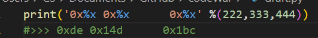

Syntax Start
熟悉一下转换为16进制的输出
内存地址是16位
__str__
print(xx)等价于print(xx.__str__())可以重写
重写方法
重写__add__,__mul__,__eq__,__nq__分别对应 + * = !=
python就是这么实现的
'----------------------------------------'
Class Xxxx:
def __init__(self,yy):
self.yy = yy
obj = Xxxx(yy)
print(dir(obj)) #出现所有可以用的内置方法
print(obj.__dict__)) #将对象attribute：value转换成字典
'----------------------------------------'
这个obj.__dict__可以用在更多的魔法方法里
如__setitem__(self,key,value):
self.__dict__[key] = value
return self.__dict__[key] 如__getitem__(self,key):
return self.__dict__[key]
__arg是私有变量
私有变量调用公式:instance.class.__binaliang
单例模式/类方法、静态方法、实例方法复习
__new__是在__init之前的
mro
method_resolution_orderClass.mro>>>会输出调用顺序
装饰器和高级装饰器
高级装饰器就是带参数的@decr(xxx)
不高级的就是 @dec()
高级的就是三层第一层就是自己decr(xxx)第二次传fn第三层传fn的arg
不高级的就是两层，没有自己的，第一层传fn,第二层传fn的arg
@property
sematic就是将方法名当作属性,fun-->attributeOOP
@property.py除了@property还有目标attr.setter或者deleter
调用用instance.attr = ' '来更新set,del instance.attr来调用删除设置